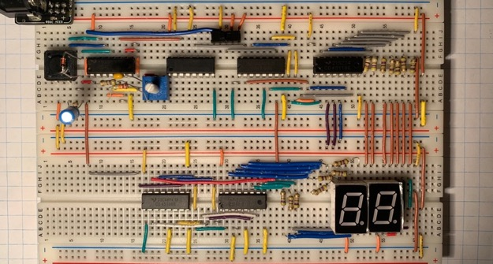
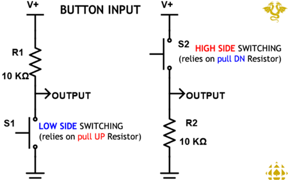
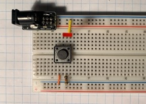
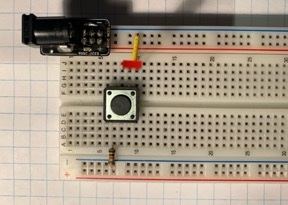
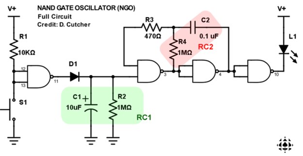
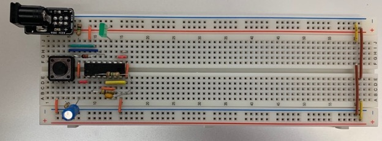

2023 · Sequential Logic
Counting Circuit
Built a multi-stage counting system that begins with a clock source and progresses through decade counting, binary counting, BCD decoding, and seven-segment display output.

Video Demonstration
Working demonstration
The project video shows the physical build, behaviour, and final result.
 ▶ Watch on YouTube
▶ Watch on YouTube
Project Overview
Turn a clock pulse into a human-readable count.
The challenge was integrating several IC stages so that the output of one stage became the timing or data input for the next without losing the count sequence.
What I built
- Low-side and high-side switch prototypes
- NAND gate oscillator clock source
- 4017 decade counter and binary up/down counter stages
- 4511 BCD-to-seven-segment decoder
- Final PCB and case version
Technical Skills
Skills demonstrated
Sequential digital logic
Applied directly in the design, build, debugging, or final integration of the project.
Clock generation
Applied directly in the design, build, debugging, or final integration of the project.
IC integration
Applied directly in the design, build, debugging, or final integration of the project.
Signal flow debugging
Applied directly in the design, build, debugging, or final integration of the project.
PCB soldering
Applied directly in the design, build, debugging, or final integration of the project.
Build Story
Switch logic and oscillator stages
Clock and control prototypes
The image to the right shows the high-side and low-side switch reference used to explain how a pushbutton can create either a high or low logic output.

Decade counter stage
The image to the right shows the low-side switch breadboard prototype, where pressing the button pulls the output low through ground.

Display decoding stage
The image to the right shows the high-side switch breadboard prototype, where pressing the button drives the output high.

PCB implementation
The image to the right shows the NAND gate oscillator circuit diagram, including the RC sections that control the duration and frequency of the clock signal.

Final case
The image to the right shows the NAND gate oscillator breadboard prototype, the timing source that drives the later counter stages.
